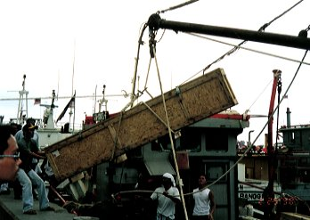
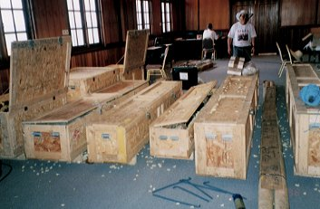
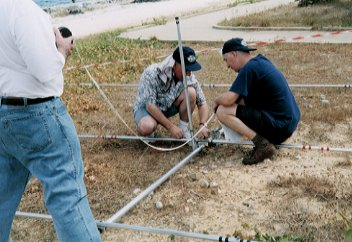
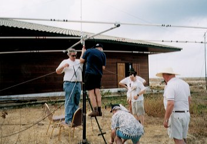
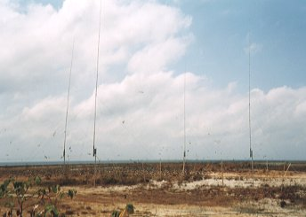
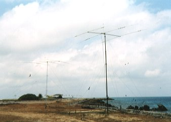
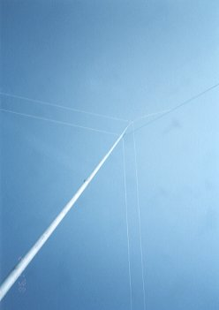
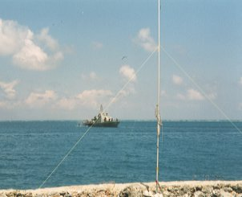

|
|
|
9M0C Spratly のアンテナ群【9M0C・Antennas Farm】9M0CのDX-Peditionでは数多くのアンテナが建てられ、使われた。 スプラトリーに持ち込まれた約1.5トンの荷物の大部分は、 アンテナ、タワー、同軸ケーブル、その他ワイヤー類で占められていた。 木箱に収められ、はるばるイギリス本国から送られてきた荷物は、メンバーが渡る前の1月19日に船でコタキナバルから1日半かけて運ばれた。今回のDX-Peditionの主力はローバンドの40m、80m、160mだっただけに、これらのアンテナ建設は入念に作業が行われた。 綿密に検討された予定表に従い、アンテナ類は滑走路脇の空地に2日間かけて建てられた。
  船で運搬されるアンテナの木箱／運用場所の建物に運びこまれた木箱類
八木系アンテナだけでも、Cushcraftの203CD(20m、3EL)、A3WS(WARC、3EL)、A3S+40(10、15、20+40m)、A3S(10、15、20m)、
A506S(6m)、に連絡用の2m(15EL)の6本が建てられた。
  炎天下、メンバー全員が手分けしてアンテナの組み立てを行った(写真はA3S+40)
  40m用four-square(左)／A3WS WARCバンド用(手前)と203CD(20m用3ELフルサイズ)
  160m phased 30 meter verticals(左)／補助的に使われたHFV6(バターナット)
◎ このDX-Peditionでは、"Log Search"を Homepage経由で行なっています。 9M0Cに関する情報は 9M0C SPRATLY 1998 Homepageでご覧下さい。
|
[Since 30.Jan.98]